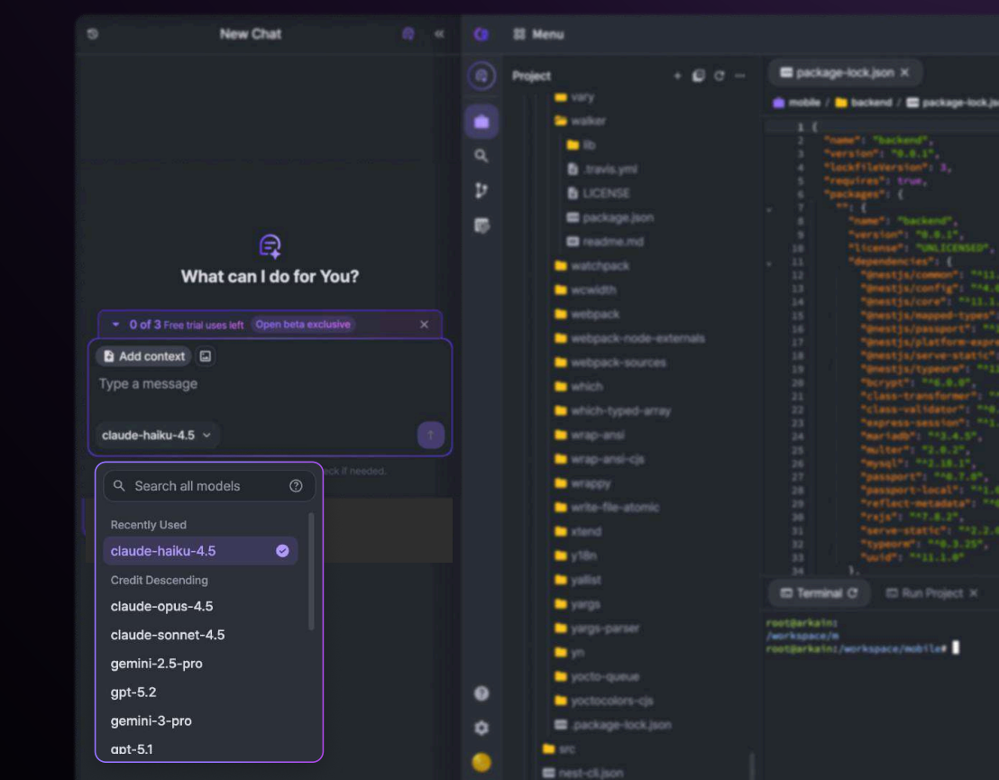
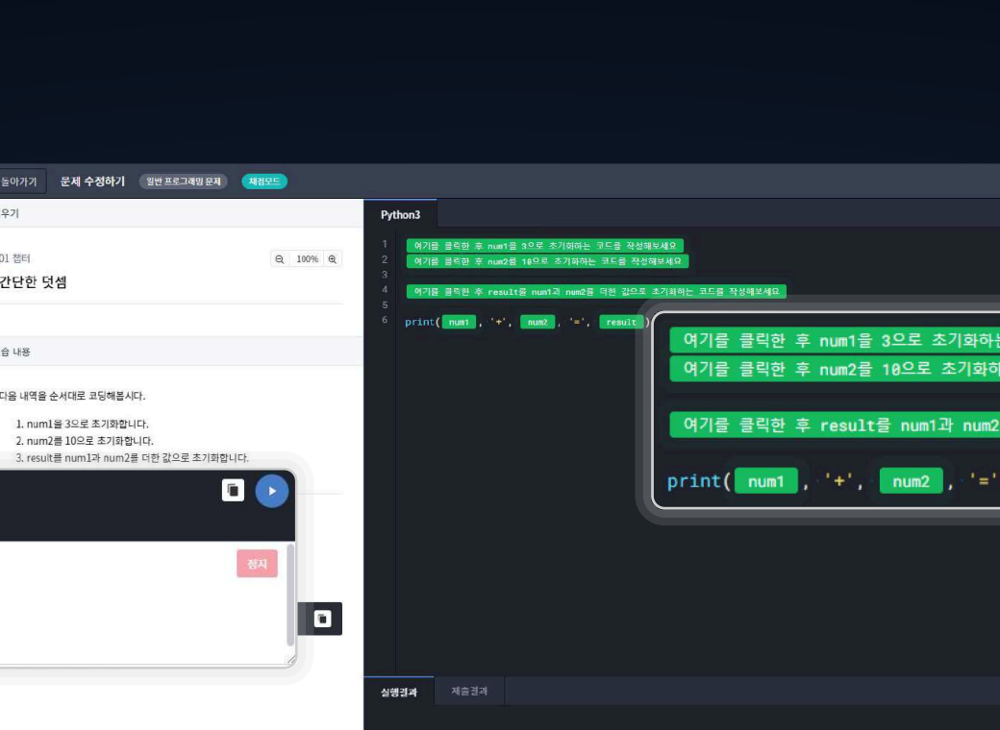
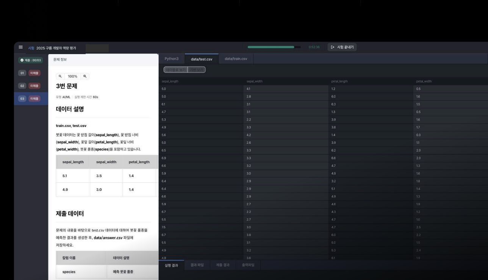

언제 어디서나 접속 가능한 개발 환경부터, 배움이 즐거운 맞춤형 교육,
그리고 나의 진짜 실력을 증명할 수 있는 객관적인 역량 평가까지.
구름(goorm)이 여러분의 성장을 함께합니다.
구름(goorm)은 코딩을 처음 접하는 입문자부터 현업 개발자까지, 누구나 환경의 제약 없이 자유롭게 학습하고 개발할 수 있는 클라우드 기반의 에코시스템을 제공합니다.
무거운 프로그램 설치나 복잡한 초기 세팅이 필요 없습니다. 웹 브라우저만 있다면 현업과 동일한 스펙의 실습 및 개발 환경이 즉시 펼쳐집니다.
코드를 작성하다 막히면 AI가 오류를 설명해 주고, 원하는 기능을 자연어로 입력하면 빠르게 앱의 뼈대를 만들어 줍니다.
프로그래밍 역량뿐 아니라 AI 툴 활용 능력까지 투명하게 측정하고, 학습한 내용을 객관적으로 확인할 수 있습니다.
클릭 몇 번으로 나만의 프로젝트 환경이 만들어집니다. 설치가 필요 없는 클라우드 통합 개발 환경에서 아이디어를 빠르게 코드로 구현해 보세요.
말로 치면 코드가 되는 AI: 자연어 프롬프트만으로 동작하는 앱을 빠르게 생성하고, 코드 자동 완성을 지원받습니다.
함께하는 코딩의 즐거움: URL 하나만 공유하면 동료와 같은 화면에서 실시간으로 코드를 편집할 수 있습니다.

눈으로만 보는 강의는 그만. 영상을 보며 직접 코딩하고, 뱃지를 모으며 게임하듯 즐겁게 성장할 수 있는 완벽한 교육 환경을 제공합니다.
보고 바로 따라 치는 환경: 한 화면에서 이론 영상을 시청하며 동시에 코딩 실습이 가능합니다.
모르면 바로 묻는 AI 튜터: AI 튜터가 문제의 원인과 힌트를 친절하게 알려줍니다.

내가 가진 문제 해결 능력을 정확히 파악하고 증명할 수 있는 코딩 테스트 플랫폼입니다. 안정적이고 공정한 환경에서 나의 역량을 마음껏 펼쳐보세요.
상세한 결과 리포트: 내가 작성한 코드와 점수, 강점을 한눈에 볼 수 있는 분석 리포트를 제공합니다.
믿을 수 있는 공정한 환경: 실시간 감독 시스템과 보안 브라우저로 모두가 공정한 조건에서 실력을 평가받습니다.
